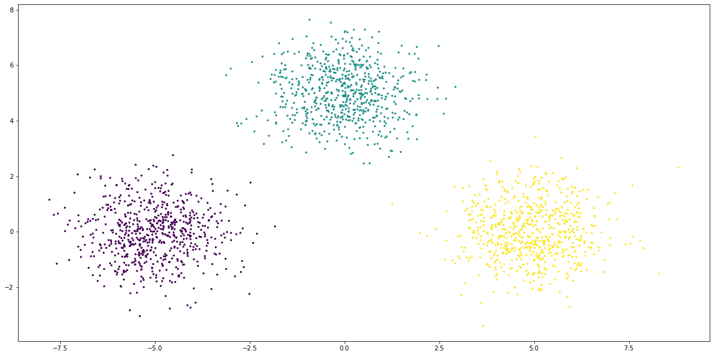
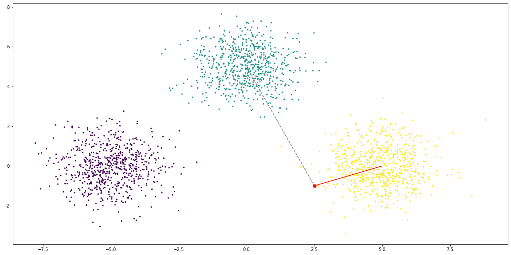
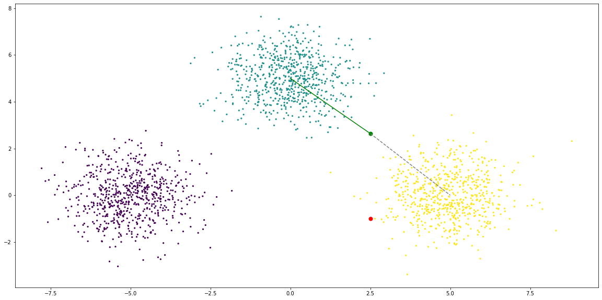

Counterfactual explanations
import trustyai
import os
pwd = os.path.abspath('')
trustyai.init(
path = [
pwd + "/../dep/org/kie/kogito/explainability-core/1.16.0.Final/*",
pwd + "/../dep/org/slf4j/slf4j-api/1.7.30/slf4j-api-1.7.30.jar",
pwd + "/../dep/org/apache/commons/commons-lang3/3.12.0/commons-lang3-3.12.0.jar",
pwd + "/../dep/org/optaplanner/optaplanner-core/8.16.0.Final/*",
pwd + "/../dep/org/apache/commons/commons-math3/3.6.1/commons-math3-3.6.1.jar",
pwd + "/../dep/org/kie/kie-api/8.16.0.Beta/*",
pwd + "/../dep/io/micrometer/micrometer-core/1.8.1/*",
]
)
Simple example
We start by defining our black-box model, typically represented by
Where \(\mathbf{x}=\{x_1, x_2, \dots,x_m\}\) and \(\mathbf{y}=\{y_1, y_2, \dots,y_n\}\).
Our example toy model, in this case, takes an all-numerical input \(\mathbf{x}\) and return a \(\mathbf{y}\) of either true or false if the sum of the \(\mathbf{x}\) components is within a threshold \(\epsilon\) of a point \(\mathbf{C}\), that is:
This model is provided in the TestUtils module. We instantiate with a \(\mathbf{C}=500\) and \(\epsilon=1.0\).
from trustyai.utils import TestUtils
center = 500.0
epsilon = 1.0
model = TestUtils.getSumThresholdModel(center, epsilon)
Next we need to define a goal. If our model is \(f(\mathbf{x'})=\mathbf{y'}\) we are then defining our \(\mathbf{y'}\) and the counterfactual result will be the \(\mathbf{x'}\) which satisfies \(f(\mathbf{x'})=\mathbf{y'}\).
We will define our goal as true, that is, the sum is withing the vicinity of a (to be defined) point \(\mathbf{C}\). The goal is a list of Output which take the following parameters
- The feature name
- The feature type
- The feature value (wrapped in
Value) - A confidence threshold, which we will leave at zero (no threshold)
We will now define our initial features, \(\mathbf{x}\). Each feature can be instantiated by using FeatureFactory and in this case we want to use numerical features, so we'll use FeatureFactory.newNumericalFeature.
import random
from trustyai.model import feature
features = [
feature(name=f"x{i+1}", value=random.random() * 10.0, dtype="number")
for i in range(4)
]
As we can see, the sum of of the features will not be within \(\epsilon\) (1.0) of \(\mathbf{C}\) (500.0). As such the model prediction will be false:
feature_sum = 0.0
for f in features:
value = f.value.as_number()
print(f"Feature {f.name} has value {value}")
feature_sum += value
print(f"\nFeatures sum is {feature_sum}")
Feature x1 has value 2.502467051769819
Feature x2 has value 5.398946159346857
Feature x3 has value 9.1657509019274
Feature x4 has value 9.073621307091113
Features sum is 26.140785420135188
The next step is to specify the constraints of the features, i.e. which features can be changed and which should be fixed. Since we want all features to be able to change, we specify False for all of them:
Finally, we also specify which are the bounds for the counterfactual search. Typically this can be set either using domain-specific knowledge or taken from the data. In this case we simply specify an arbitrary (sensible) value, e.g. all the features can vary between 0 and 1000.
We can now instantiate the explainer itself.
To do so, we will to configure the termination criteria. For this example we will specify that the counterfactual search should only execute a maximum of 10,000 iterations before stopping and returning whatever the best result is so far.
We can can now instantiate the explainer itself using CounterfactualExplainer.
from trustyai.explainers import CounterfactualExplainer
explainer = CounterfactualExplainer(steps=10_000)
SLF4J: Failed to load class "org.slf4j.impl.StaticLoggerBinder".
SLF4J: Defaulting to no-operation (NOP) logger implementation
SLF4J: See http://www.slf4j.org/codes.html#StaticLoggerBinder for further details.
We will now express the counterfactual problem as defined above.
inputrepresents our \(\mathbf{x}\) which know gives a prediction ofFalseoutputsrepresents our \(\mathbf{y'}\), that is our desired prediction (True)domainrepreents the boundaries for the counterfactual search
We wrap these quantities in a CounterfactualPrediction (the UUID is simply to label the search instance):
import uuid
from trustyai.local.counterfactual import counterfactual_prediction
prediction = counterfactual_prediction(
input_features=features,
outputs=goal,
domains=feature_boundaries)
We now request the counterfactual \(\mathbf{x'}\) which is closest to \(\mathbf{x}\) and which satisfies \(f(\mathbf{x'}, \epsilon, \mathbf{C})=\mathbf{y'}\):
We can see that the counterfactual \(\mathbf{x'}\)
feature_sum = 0.0
for entity in explanation.entities:
print(entity)
feature_sum += entity.getProposedValue()
print(f"\nFeature sum is {feature_sum}")
java.lang.DoubleEntity{value=476.23232252502146, rangeMinimum=0.0, rangeMaximum=1000.0, id='x1'}
java.lang.DoubleEntity{value=5.398946159346857, rangeMinimum=0.0, rangeMaximum=1000.0, id='x2'}
java.lang.DoubleEntity{value=9.291426877845232, rangeMinimum=0.0, rangeMaximum=1000.0, id='x3'}
java.lang.DoubleEntity{value=9.073621307091113, rangeMinimum=0.0, rangeMaximum=1000.0, id='x4'}
Feature sum is 499.9963168693047
Constrained features
As we've seen, it is possible to constraint a specific feature \(x_i\) by setting the constraints list corresponding element to True.
In this example, we know want to fix \(x_1\) and \(x_4\). That is, these features should have the same value in the counterfactual \(\mathbf{x'}\) as in the original \(\mathbf{x}\).
We simply need to wrap the previous quantities with the new constraints:
prediction = counterfactual_prediction(
input_features=features,
outputs=goal,
domains=feature_boundaries,
constraints=constraints)
And request a new counterfactual explanation
We can see that \(x_1\) and \(x_4\) has the same value as the original and the model satisfies the conditions.
print(f"Original x1: {features[0].value.as_number()}")
print(f"Original x4: {features[3].value.as_number()}\n")
for entity in explanation.entities:
print(entity)
Original x1: 2.502467051769819
Original x4: 9.073621307091113
java.lang.DoubleEntity{value=2.502467051769819, rangeMinimum=2.502467051769819, rangeMaximum=2.502467051769819, id='x1'}
java.lang.DoubleEntity{value=5.398946159346857, rangeMinimum=0.0, rangeMaximum=1000.0, id='x2'}
java.lang.DoubleEntity{value=482.7102364844587, rangeMinimum=0.0, rangeMaximum=1000.0, id='x3'}
java.lang.DoubleEntity{value=9.073621307091113, rangeMinimum=9.073621307091113, rangeMaximum=9.073621307091113, id='x4'}
Using Python models
We will now show how to use a custom Python model with TrustyAI counterfactual explanations.
The model will be an XGBoost one trained with the credit-bias dataset (available here).
For convenience, the model is pre-trained and serialised with joblib so that for this example we simply need to deserialised it.
XGBClassifier(base_score=0.5, booster='gbtree', colsample_bylevel=1,
colsample_bynode=1, colsample_bytree=1, gamma=0, gpu_id=-1,
importance_type='gain', interaction_constraints='',
learning_rate=0.07, max_delta_step=0, max_depth=8,
min_child_weight=1, missing=nan, monotone_constraints='()',
n_estimators=200, n_jobs=12, num_parallel_tree=1, random_state=27,
reg_alpha=0, reg_lambda=1, scale_pos_weight=0.9861206227457426,
seed=27, subsample=1, tree_method='exact', validate_parameters=1,
verbosity=None)
This model has as a single output a boolean PaidLoan, which will predict whether a certain loan applicant will repay the loan in time or not. The model is slightly more complex than the previous examples, with input features:
| Input feature | Type | Note |
|---|---|---|
NewCreditCustomer |
boolean | |
Amount |
numerical | |
Interest |
numerical | |
LoanDuration |
numerical | In months |
Education |
numerical | Level (1, 2, 3..) |
NrOfDependants |
numerical | Integer |
EmploymentDurationCurrentEmployer |
numerical | Integer (years) |
IncomeFromPrincipalEmployer |
numerical | |
IncomeFromPension |
numerical | |
IncomeFromFamilyAllowance |
numerical | |
IncomeFromSocialWelfare |
numerical | |
IncomeFromLeavePay |
numerical | |
IncomeFromChildSupport |
numerical | |
IncomeOther |
numerical | |
ExistingLiabilities |
numerical | integer |
RefinanceLiabilities |
numerical | integer |
DebtToIncome |
numerical | |
FreeCash |
numerical | |
CreditScoreEeMini |
numerical | integer |
NoOfPreviousLoansBeforeLoan |
numerical | integer |
AmountOfPreviousLoansBeforeLoan |
numerical | |
PreviousRepaymentsBeforeLoan |
numerical | |
PreviousEarlyRepaymentsBefoleLoan |
numerical | |
PreviousEarlyRepaymentsCountBeforeLoan |
numerical | integer |
Council_house |
boolean | |
Homeless |
boolean | |
Joint_ownership |
boolean | |
Joint_tenant |
boolean | |
Living_with_parents |
boolean | |
Mortgage |
boolean | |
Other |
boolean | |
Owner |
boolean | |
Owner_with_encumbrance |
boolean | |
Tenant |
boolean | |
Entrepreneur |
boolean | |
Fully |
boolean | |
Partially |
boolean | |
Retiree |
boolean | |
Self_employed |
boolean |
We will start by testing the model with an input we are quite sure (from the original data) that will be predicted as false:
x = [
[
False,
2125.0,
20.97,
60,
4.0,
0.0,
6.0,
0.0,
301.0,
0.0,
53.0,
0.0,
0.0,
0.0,
8,
6,
26.29,
10.92,
1000.0,
1.0,
500.0,
590.95,
0.0,
0.0,
0,
0,
0,
0,
0,
0,
0,
1,
0,
0,
0,
0,
0,
1,
0,
]
]
We can see that this application will be rejected with a probability of \(\sim77\%\):
import numpy as np
print(xg_model.predict_proba(np.array(x)))
print(f"Paid loan is predicted as: {xg_model.predict(np.array(x))}")
[[0.7770493 0.22295067]]
Paid loan is predicted as: [False]
We will now prepare the XGBoost model to be used from the TrustyAI counterfactual engine.
To do so, we simply need to first create a prediction function which takes:
- A list of
PredictionInputas inputs - A list of
PredictionOutputas outputs
If these two conditions are met, the actual inner working of this method can be anything (including calling a XGBoost Python model for prediction as in our case):
from org.kie.kogito.explainability.model import PredictionInput, PredictionOutput
def predict(inputs):
values = [_feature.value.as_obj() for _feature in inputs[0].features]
result = xg_model.predict_proba(np.array([values]))
false_prob, true_prob = result[0]
if false_prob > true_prob:
_prediction = (False, false_prob)
else:
_prediction = (True, true_prob)
_output = output(name="PaidLoan", dtype="bool", value=_prediction[0], score=_prediction[1])
return [PredictionOutput([_output])]
Once the prediction method is created, we wrap in a PredictionProvider class.
This class takes care of all the JVM's asynchronous plumbing for us.
We will now express the previous inputs (x) in terms of Features, so that we might use it for the counterfactual search:
def make_feature(name, value):
if isinstance(value, bool):
return feature(name=name, dtype="bool", value=value)
else:
return feature(name=name, dtype="number", value=value)
features = [
make_feature(p[0], p[1])
for p in [
("NewCreditCustomer", False),
("Amount", 2125.0),
("Interest", 20.97),
("LoanDuration", 60.0),
("Education", 4.0),
("NrOfDependants", 0.0),
("EmploymentDurationCurrentEmployer", 6.0),
("IncomeFromPrincipalEmployer", 0.0),
("IncomeFromPension", 301.0),
("IncomeFromFamilyAllowance", 0.0),
("IncomeFromSocialWelfare", 53.0),
("IncomeFromLeavePay", 0.0),
("IncomeFromChildSupport", 0.0),
("IncomeOther", 0.0),
("ExistingLiabilities", 8.0),
("RefinanceLiabilities", 6.0),
("DebtToIncome", 26.29),
("FreeCash", 10.92),
("CreditScoreEeMini", 1000.0),
("NoOfPreviousLoansBeforeLoan", 1.0),
("AmountOfPreviousLoansBeforeLoan", 500.0),
("PreviousRepaymentsBeforeLoan", 590.95),
("PreviousEarlyRepaymentsBefoleLoan", 0.0),
("PreviousEarlyRepaymentsCountBeforeLoan", 0.0),
("Council_house", False),
("Homeless", False),
("Joint_ownership", False),
("Joint_tenant", False),
("Living_with_parents", False),
("Mortgage", False),
("Other", False),
("Owner", False),
("Owner_with_encumbrance", True),
("Tenant", True),
("Entrepreneur", False),
("Fully", False),
("Partially", False),
("Retiree", True),
("Self_employed", False),
]
]
We can confirm now, with the newly created PredictionProvider model that this input will lead to a false PaidLoan prediction:
'Output{value=false, type=boolean, score=0.7835956811904907, name='PaidLoan'}'
Unconstrained basic search
To get started we will search for a counterfactual with no constraints at all. This is not a realistic use case, but we will use it as a baseline.
We will also create a set of equal bounds for all the features. Again, this is not realistic, but we do it to establish a baseline. Note that boolean features will ignore the bounds anyway, so we can just create a set such as:
We want our goal to be the model predicting the loan will be paid (PaidLoad=true), so we specify it as:
We now wrap all this context in a CounterfactualPrediction object
We are now ready to search for a counterfactual:
First we will confirm that our counterfactual changes the outcome, by predicting its outcome using the model:
testf = [f.asFeature() for f in explanation.getEntities()]
model.predictAsync([PredictionInput(testf)]).get()[0].getOutputs()[
0
].toString()
'Output{value=true, type=boolean, score=0.5882376432418823, name='PaidLoan'}'
And indeed it changes. We will now verify which features were changed:
def show_changes(explanation, original):
entities = explanation.entities
N = len(original)
for i in range(N):
name = original[i].name
original_value = original[i].value.as_number()
new_value = entities[i].as_feature().value.as_number()
if original_value != new_value:
print(f"Feature '{name}': {original_value} -> {new_value}")
show_changes(explanation, features)
Feature 'RefinanceLiabilities': 6.0 -> 1.230474777192958
Feature 'PreviousEarlyRepaymentsCountBeforeLoan': 0.0 -> 6.0
Here we can see the problem with the unconstrained search.
Some of the fields that were changed (e.g. IncomeFromSocialWelfare, RefinanceLiabilities, etc) might be difficult to change in practice.
Constrained search
We will now try a more realistic search, which incorporates domain specific knowledge (and common sence).
To do so, we will constrain features we feel they shouldn't (or mustn't) change and specify sensible search bounds. We will start with the constraints:
constraints = [
True, # NewCreditCustomer
False, # Amount
True, # Interest
False, # LoanDuration
True, # Education
True, # NrOfDependants
False, # EmploymentDurationCurrentEmployer
False, # IncomeFromPrincipalEmployer
False, # IncomeFromPension
False, # IncomeFromFamilyAllowance
False, # IncomeFromSocialWelfare
False, # IncomeFromLeavePay
False, # IncomeFromChildSupport
False, # IncomeOther
True, # ExistingLiabilities
True, # RefinanceLiabilities
False, # DebtToIncome
False, # FreeCash
False, # CreditScoreEeMini
True, # NoOfPreviousLoansBeforeLoan
True, # AmountOfPreviousLoansBeforeLoan
True, # PreviousRepaymentsBeforeLoan
True, # PreviousEarlyRepaymentsBefoleLoan
True, # PreviousEarlyRepaymentsCountBeforeLoan
False, # Council_house
False, # Homeless
False, # Joint_ownership
False, # Joint_tenant
False, # Living_with_parents
False, # Mortgage
False, # Other
False, # Owner
False, # Owner_with_encumbrance"
False, # Tenant
False, # Entrepreneur
False, # Fully
False, # Partially
False, # Retiree
False, # Self_employed
]
The constraints should be self-explanatory, but in essence they were divided into three groups
- Attributes you cannot or should not change (protected), for instance age, education level, etc
- Attributes you can change, for loan duration, loan amount, etc
- Attributes you probably won't be able to change, but might be informative to change. For instance, you might not be able to easily change your income, but you might be interested in how much would it need to be in order to get the prediction as favourable.
features_boundaries = [
None, # NewCreditCustomer
(0.0, 1000.0), # Amount
None, # Interest
(0.0, 120.0), # LoanDuration
None, # Education
None, # NrOfDependants
(0.0, 40.0), # EmploymentDurationCurrentEmployer
(0.0, 1000.0), # IncomeFromPrincipalEmployer
(0.0, 1000.0), # IncomeFromPension
(0.0, 1000.0), # IncomeFromFamilyAllowance
(0.0, 1000.0), # IncomeFromSocialWelfare
(0.0, 1000.0), # IncomeFromLeavePay
(0.0, 1000.0), # IncomeFromChildSupport
(0.0, 1000.0), # IncomeOthe
None, # ExistingLiabilities
None, # RefinanceLiabilities
(0.0, 100.0), # DebtToIncome
(0.0, 100.0), # FreeCash
(0.0, 10000.0), # CreditScoreEeMini
None, # NoOfPreviousLoansBeforeLoan
None, # AmountOfPreviousLoansBeforeLoan
None, # PreviousRepaymentsBeforeLoan
None, # PreviousEarlyRepaymentsBefoleLoan
None, # PreviousEarlyRepaymentsCountBeforeLoan
None, # Council_house
None, # Homeless
None, # Joint_ownership
None, # Joint_tenant
None, # Living_with_parents
None, # Mortgage
None, # Other
None, # Owner
None, # Owner_with_encumbrance
None, # Tenant
None, # Entrepreneur
None, # Fully
None, # Partially
None, # Retiree
None, # Self_employed
]
As before, we wrap this data in a CounterfactualPrediction:
prediction = counterfactual_prediction(
input_features=features,
outputs=goal,
domains=features_boundaries,
constraints=constraints
)
And we start a new search:
We test that the counterfactual does change the outcome:
testf = [f.as_feature() for f in explanation.entities]
model.predictAsync([PredictionInput(testf)]).get()[0].outputs[0].toString()
'Output{value=true, type=boolean, score=0.5038489103317261, name='PaidLoan'}'
And we confirm that no constrained features were changed:
Feature 'LoanDuration': 60.0 -> 56.432745812537775
Feature 'IncomeFromSocialWelfare': 53.0 -> 60.0
Minimum counterfactual probabilities
We can see that the previous answer is very close to \(50\%\).
With TrustyAI we have the possiblity to specify a minimum probability for the result (when the model supports prediction confidences).
Let's say we want a result that is at least \(75\%\) confident that the loan will be repaid. We can just encode the minimum probability as the last argument of each Output. A minimum probability of \(0\) (as we've used) simply means that any desired outcome will be accepted, regardless of its probability.
We can then re-run the search with all the data as defined previously:
prediction = counterfactual_prediction(
input_features=features,
outputs=goal,
domains=features_boundaries,
constraints=constraints
)
As previously, we check that the answer is what we are looking for
testf = [f.as_feature() for f in explanation.entities]
model.predictAsync([PredictionInput(testf)]).get()[0].outputs[0].toString()
'Output{value=true, type=boolean, score=0.7572674751281738, name='PaidLoan'}'
And we show which features need to be changed for said desired outcome:
Feature 'LoanDuration': 60.0 -> 14.798944010723588
Visualisation
Let's try to visualise counterfactuals in action with the following example:
We construct three clusters of data and train a model to assign points to a cluster. Our counterfactual question can then be
If we have a point \(X\) belonging to a certain cluster \(C\), how far would it need to move in order to belong to a desired cluster \(C^{\prime}\)
from sklearn.datasets import make_blobs
X, y = make_blobs(n_samples=2000, n_features=2, random_state=0, centers=[(-5,0), (0, 5), (5, 0)])
import matplotlib.pyplot as plt
plt.figure(figsize=(20,10))
plt.scatter(X[:,0], X[:,1], c=y, s=5)
plt.show()

We now train a KNN model in order to classify points and assign them to a cluster.
from sklearn.neighbors import KNeighborsClassifier
knn = KNeighborsClassifier(n_neighbors = 3)
knn.fit(X,y)
KNeighborsClassifier(n_neighbors=3)
If we take a point such as (2.5, -1) it is clear this point will belong to cluster 2.
plt.figure(figsize=(20,10))
ORIGINAL = [2.5, -1.0]
plt.scatter(X[:,0], X[:,1], c=y, s=5)
plt.scatter(ORIGINAL[0], ORIGINAL[1], c="red", s=50)
plt.plot([ORIGINAL[0], 5], [ORIGINAL[1], 0], c="red")
plt.plot([ORIGINAL[0], 0], [ORIGINAL[1], 5], c="grey", linestyle="dashed")
plt.show()

array([[0., 0., 1.]])
We can now create our prediction function. I will simply take the x and y and return the cluster classification,
along with a probability.
def knn_classify(inputs):
values = [_feature.value.as_number() for _feature in inputs[0].features]
result = knn.predict_proba(np.array([values]))
index = np.argmax(result, axis=1)[0]
_output = output(name="cluster", dtype="number", value=index, score=result[0][index])
return [PredictionOutput([_output])]
We wrap this function in the Model wrapper.
We can test it and confirm it works as expected.
features = [feature("x", "number", 2.5), feature("y", "number", -1.0)]
knn_model.predictAsync([PredictionInput(features)]).get()[0].outputs[0].toString()
'Output{value=2, type=number, score=1.0, name='cluster'}'
We now define our goal. We want it to belong to cluster 1.
We pass this data to the explainer along with the search boundaries.
prediction = counterfactual_prediction(
input_features=features,
outputs=goal,
domains=[(-10, 10), (-10, 10)]
)
explanation = explainer.explain(prediction, knn_model)
The counterfactual we get is:
[2.501921601686025, 2.6401536249215436]
We can confirm this point belongs to cluster 1
testf = [feature("x", "number", result[0]), feature("y", "number", result[1])]
knn_model.predictAsync([PredictionInput(testf)]).get()[0].outputs[0].toString()
'Output{value=1, type=number, score=1.0, name='cluster'}'
And visually:
plt.figure(figsize=(20,10))
plt.scatter(X[:,0], X[:,1], c=y, s=5)
plt.scatter(ORIGINAL[0], ORIGINAL[1], c="red", s=50)
plt.scatter(result[0], result[1], c="green", s=50)
plt.plot([result[0], 5], [result[1], 0], c="grey", linestyle="dashed")
plt.plot([result[0], 0], [result[1], 5], c="green")
plt.show()
